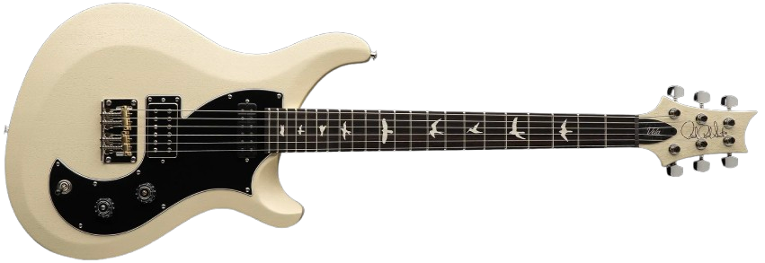

Lenga
Elegimos las guitarras mas exclusivas para entregarte.
Lenga es un e-commerce de guitarras exclusivas en Buenos Aires, inspirado en la madera lenga de la Patagonia, reconocida por su nobleza y resonancia. Nuestro nombre refleja la esencia de lo que ofrecemos: instrumentos únicos, seleccionados por su calidad, diseño y carácter propio. En Lenga creemos que cada guitarra es más que un instrumento, es una extensión del músico y de su identidad. Por eso reunimos modelos especiales y ediciones limitadas, pensados para quienes valoran lo artesanal y lo auténtico. Más que una tienda, somos un espacio donde descubrir guitarras con personalidad y un sonido inconfundible.

Stratocaster vintage 60s
Fender
Stratocaster
Inspirada en la década dorada del rock, esta Stratocaster captura el auténtico espíritu de los 60. Con pastillas de estilo vintage, mástil en C y tonos brillantes, ofrece un sonido versátil ideal para blues, surf y rock clásico. Su estética retro resalta con un acabado elegante y nostálgico.
$899,99
Ver +

Player II Modified Telecaster® SH
Fender
Telecaster
La Player II Modified Telecaster® SH fusiona el diseño clásico Tele con mayor versatilidad. Con pastillas humbucker en el puente y single-coil en el mástil, ofrece desde limpios brillantes hasta sonidos potentes. Su mástil Modern “C”con 22 trastes y puente de seis selletas aseguran comodidad, afinación estable y un rango tonal ideal para diversos estilos.
$1.000,00
Ver +

Limited Edition American Professional II Stratocaster® Thinline
Fender
Stratocaster
La Limited Edition American Professional II Stratocaster® Thinline combina el diseño icónico Strat con cuerpo semi-hueco para mayor resonancia. Sus pastillas V-Mod II ofrecen tonos claros y dinámicos, mientras el mástil Deep “C” y 22 trastes proporcionan comodidad y precisión. Ideal para guitarristas que buscan versatilidad, sustain mejorado y un sonido Strat clásico con carácter moderno.
$2.345,00
Ver +

ES-335 Figured Custom Color - Deep Ocean Burst
Gibson
ES-335
Cuerpo semihueco de arce/álamo/arce veteado AAA de 3 capas con bloque central de arce macizo, mástil de caoba con perfil C redondeado y diapasón de madera de palo de rosa, pastillas calibradas tipo T y acabados de la serie Custom Color.
$4.200,00
Ver +

American Professional II Stratocaster HSS
Fender
Stratocaster
Our popular Deep "C" neck now sports smooth rolled fingerboard edges, a "Super-Natural" satin finish and a newly sculpted neck heel for a supremely comfortable feel and easy access to the upper register. New V-Mod II Stratocaster single-coil pickups are more articulate than ever while retaining bell-like chime and warmth.
$5.700,00
Ver +
Flying V Custom Figured Top - Cobra Burst
Gibson
Flying V
This Gibson Custom Select Flying V™ Custom features a flame maple top and a custom Cobra Burst finish. Guitars from Gibson Custom Select offer unique features that are handpicked by Gibson’s experts. These guitars are based on existing models but have custom finishes.
$10.235,00
Ver +
Les Paul Standard 50s, Exclusive - Transparent Black
Gibson
Les Paul
La Les Paul Standard 50s honra el legado clásico con construcción sólida de caoba, tapa de arce y perfil de mástil grueso. Sus humbuckers Burstbucker recrean los tonos cálidos y potentes de los años cincuenta. Una guitarra robusta, elegante y confiable para quienes buscan autenticidad sonora y estilo icónico.
$3.500,00
Ver +

SG Standard Custom Color - Classic White
Gibson
SG
La SG Standard en Classic White fusiona tradición y distinción. Con doble cutaway para un acceso cómodo, cuerpo liviano y potentes humbuckers, entrega un tono mordaz y lleno de carácter. Su acabado blanco clásico le otorga un aire sofisticado que combina perfectamente con su agresiva personalidad sonora.
$1.350,00
Ver +

Gibson Custom 1958 Les Paul Junior Double Cut, Heavy Aged, TV Yellow
Gibson
Les Paul Junior
Una joya de colección que revive el espíritu de 1958. Su cuerpo de caoba con doble cutaway y acabado Heavy Aged en TV Yellow evoca el paso del tiempo con carácter. Su P-90 ofrece ataque crudo, directo y expresivo, ideal para rock vintage y estilos llenos de actitud.
$9.200,00
Ver +

ES Special Swap PRS
PRS
ES Swap PRS
La PRS Special Swap ofrece versatilidad y sofisticación en un solo instrumento. Con cuerpo semi-hollow, combina claridad y resonancia natural. Equipada con humbuckers y una single-coil central, brinda una paleta tonal única para estilos modernos y clásicos. Su acabado refinado y construcción impecable la hacen destacar en escenario y estudio.
$899,00
Ver +
SE HOLLOWBODY STANDARD PIEZO
PRS
SE Hollowbody
La SE Hollowbody Standard Piezo combina calidez acústica y potencia eléctrica en un solo instrumento. Su cuerpo completamente hueco ofrece resonancia rica y natural, mientras el sistema piezo integrado permite sonidos acústicos realistas. Con pastillas humbucker y versatilidad tonal, es perfecta para músicos que buscan elegancia, dinamismo y expresión.
$999,00
Ver +

S2 VELA SATIN
PRS
S2
La S2 Vela Satin combina un estilo retro con la modernidad de PRS. Su cuerpo ligero y acabado satinado realzan la resonancia natural. Equipada con una pastilla Starla humbucker y una single-coil Type-D, ofrece tonos versátiles, desde limpios brillantes hasta crujidos clásicos. Una guitarra cómoda, elegante y con gran carácter.
$1.299,00
Ver +
Stories Collection Mike Campbell Red Dog Telecaster®
Fender
Telecaster signature
Inspirada en la legendaria guitarra de Mike Campbell, esta Telecaster® combina historia y carácter. Con acabado Road Worn® Red over Blue, mástil en C y pastillas estilo vintage, ofrece tonos brillantes y definidos. Es un tributo a la autenticidad del rock, diseñada para músicos que valoran alma y legado.
$4.200,00
Ver +
Stevie Ray Vaughan Stratocaster
Fender
Stratocaster signature
Un tributo al icónico sonido de SRV, esta Stratocaster® destaca por su golpeador dorado, puente invertido y mástil ovalado en forma de “C”. Equipada con pastillas Texas Special™, ofrece un tono potente y lleno de blues. Es la herramienta perfecta para guitarristas que buscan expresividad, garra y autenticidad.
$5.760,00
Ver +
Jack White Triplecaster™ Telecaster®
Fender
Telecaster signature
Sé que Fender lanzó en ediciones limitadas la Custom Shop Triple Strat/Tele, conocidas como Triplecaster, con tres humbuckers o configuraciones especiales. Pero también hay luthiers y ediciones boutique con ese nombre.
$10.599,00
Ver +

Gibson Mod™ Collection 1958 Explorer Reissue, Plum Chameleon
Gibson
Explorer
Un clásico futurista reinventado. Está Explorer Reissue de 1958 luce un exclusivo acabado Plum Chameleon que cambia con la luz. Con cuerpo de caoba, mástil sólido y potentes humbuckers Burstbucker, ofrece sustain, pegada y un tono inconfundible. Una pieza única que mezcla tradición, innovación y personalidad arrolladora.
$3.777,00
Ver +
Gibson Certified Vintage 1960 Gibson ES-355TDSV, Cherry
Gibson
ES-355
Una joya histórica de Gibson, esta ES-355TDSV de 1960 en acabado Cherry combina elegancia y sonido legendario. Con cuerpo semihueco, electrónica Varitone y vibrato Maestro, ofrece tonos cálidos, expresivos y versátiles. Certificada como pieza vintage auténtica, es un ícono buscado por coleccionistas y músicos que valoran herencia y sofisticación.
$34.555,00
Ver +
Gibson Les Paul Standard 60s Plain Top, Tobacco Burst, Exclusive
Gibson
Les Paul
Esta exclusiva Les Paul Standard 60s Plain Top combina la elegancia del acabado Tobacco Burst con un estilo sobrio y clásico. Su mástil Slimtaper ofrece comodidad moderna, mientras los humbuckers Burstbucker entregan calidez, sustain y pegada. Un modelo auténtico que celebra el legado sesentero con carácter exclusivo.
$6.500,00
Ver +

American Ultra II Stratocaster® Left-Hand
Fender
Stratocaster
Diseñada para guitarristas zurdos que buscan lo último en innovación y comodidad. Con mástil moderno “Modern D”, trastes Ultra, pastillas V-Mod II y sistema de tremolo de última generación, ofrece versatilidad tonal, claridad y sustain. Ideal para escenarios exigentes, estudio y músicos que valoran precisión y rendimiento superior.
$877,00
Ver +

Classic Vibe '70s Competition Mustang®
Fender
Mustang
Inspirada en el espíritu de los 60, esta Mustang® ofrece estilo y rendimiento clásico. Con cuerpo compacto, pastillas single-coil de época y mástil en “C” cómodo, entrega tonos brillantes y dinámicos. Su acabado Competition añade carácter visual retro, mientras su versatilidad la hace ideal para rock, indie y blues modernos.
$855,00
Ver +
Player II Modified Telecaster®
Fender
Telecaster
La Player II Modified Telecaster® combina el clásico cuerpo Tele con mejoras modernas: pastillas humbucking y single-coil para tonos versátiles, mástil en “C” cómodo, diapasón de radio 12" y puente de seis selletas. Ideal para quienes buscan el sonido Fender tradicional con mayor flexibilidad y estilo contemporáneo.
$1.400,00
Ver +